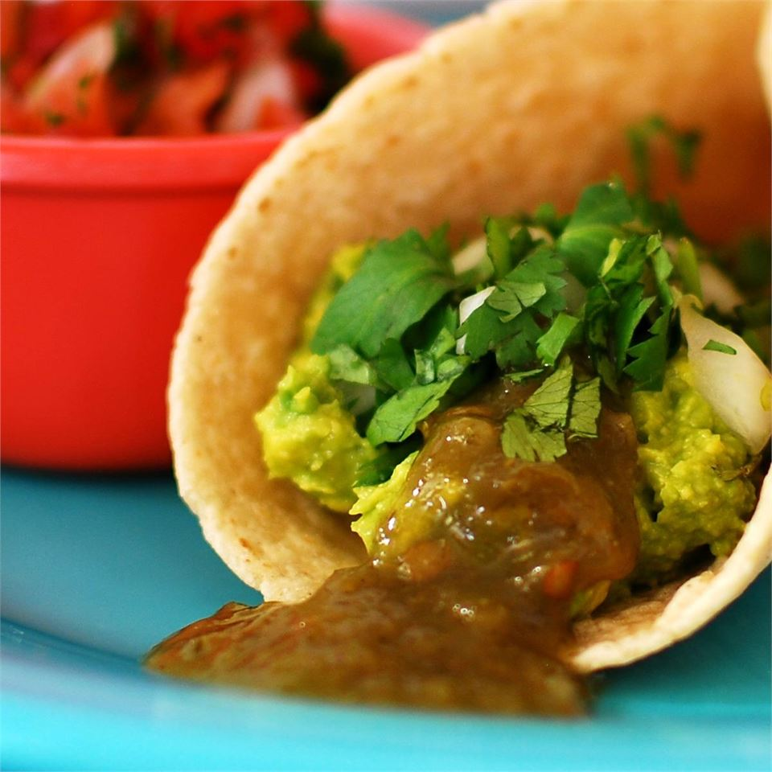

Avocado Tacos

Description
These Avocado Tacos will have you feeling like they actually came from Mexico with their speciallty avocado added on top.
You will think these tacos are only for a high teir cheif but this easy guide will help you cook them as if it were a high quality chief.
You will now forever always be invited once you are done with them better make a backup batch or else.
ingredients
- 3 avocados - peeled, pitted, and mashed
- ¼ cup onions, diced
- ¼ teaspoon garlic salt
- 12 (6 inch) corn tortillas
- 1 bunch fresh cilantro leaves, finely chopped
- jalapeno pepper sauce, to taste
Steps
- Preheat oven to 325 degrees F (165 degrees C).
- In a medium bowl, mix avocados, onions, and garlic salt.
- Arrange corn tortillas in a single layer on a large baking sheet, and place in the preheated oven 2 to 5 minutes, until heated through.
- Spread tortillas with the avocado mixture. Garnish with cilantro and sprinkle with jalapeno pepper sauce.
Nutrition Facts
Per Serving: 279 calories; protein 5.3g; carbohydrates 32.8g; fat 16.3g; sodium 110.5mg.